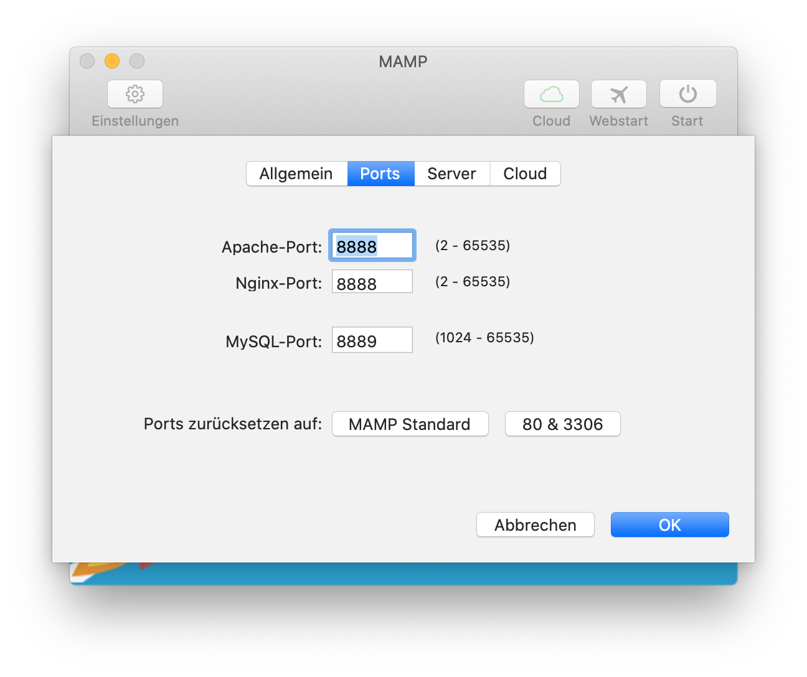
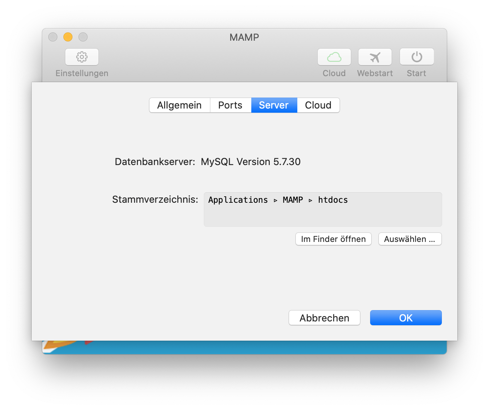
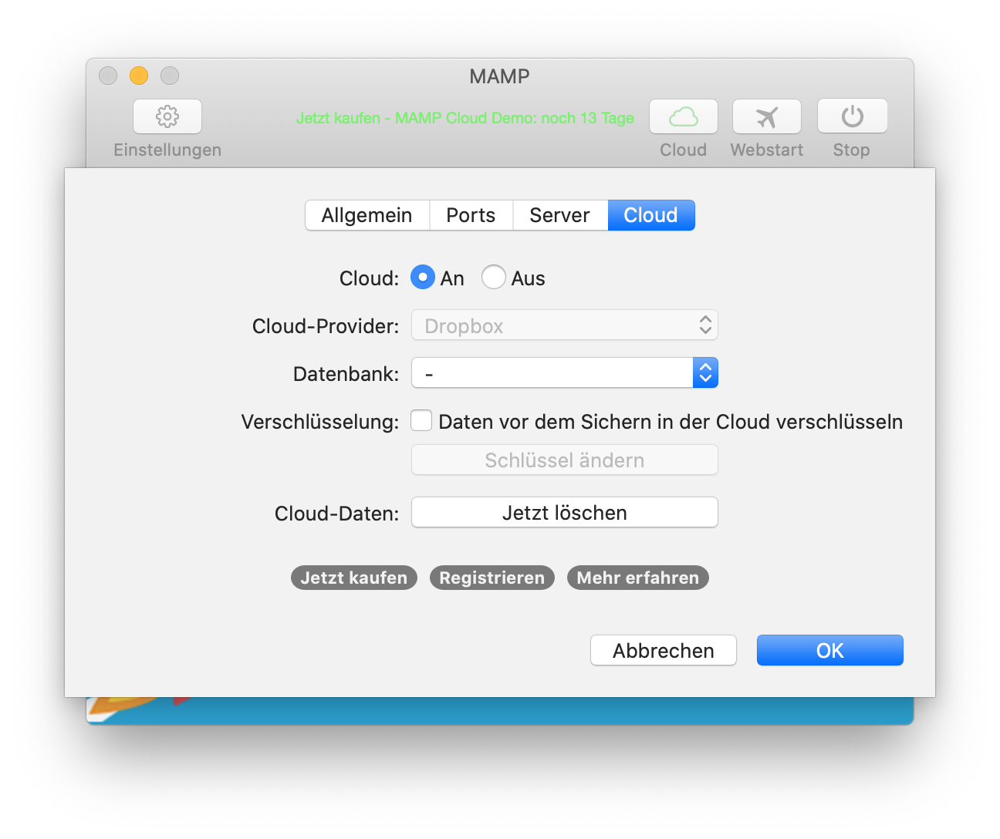

Sie können sie im Bereich "Ports" des Einstellungsdialogs ändern:

Nach der Installation von MAMP ist das Stammverzeichnis des Web-Servers, auch "Document Root" genannt, auf den Ordner "/Programme/MAMP/htdocs" eingestellt. Sie können jeden anderen Ordner verwenden, Sie müssen nur Schreib- und Leserechte für ihn besitzen. Den Pfad für das Stammvereichnis können Sie jederzeit unter Einstellungen ändern:

Die beliebte Cloud-Funktion aus MAMP PRO ist nun auch in MAMP verfügbar. MAMP Cloud ermöglich es Ihnen, Ihre Host- und Datenbank-Daten zu Dropbox zu sichern. Mit nur einem Klick können Sie ganz einfach Ihre Projekte in der Cloud sichern und jederzeit auf einem anderen (oder dem selben) Computer wieder laden.

Öffnen Sie das Terminal und schreiben folgenden Befehl:/Applications/MAMP/Library/bin/mysqladmin -u root -p password <NEUESKENNWORT>
Anstelle von <NEUESKENNWORT> müssen Sie das gewünschte Kennwort eingeben. Wenn es Leerzeichen enthält, setzen Sie es bitte in doppelte Anführungszeichen. Ehe der Befehl das neue Kennwort setzt, frägt er Sie noch nach dem aktuellen.
Bedenken Sie, dass dannach auch das Kennwort für phpMyAdmin und andere Skripte, welche unter MAMP laufen, geändert werden muss. Das Kennwort für phpMyAdmin können Sie in der Datei /Applications/MAMP/bin/phpMyAdmin/config.inc.php ändern.
Sie haben wahrscheinlich den Apache-Port kleiner als 1024 eingestellt. Bei einem Unix-System, wie macOS, benötigen Sie root-Rechte um IP-Dienste mit Ports kleiner als 1024 zu starten.